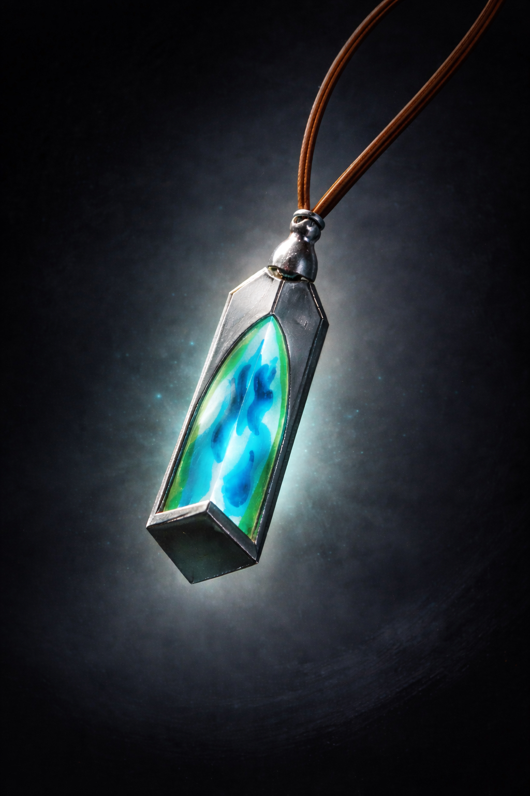
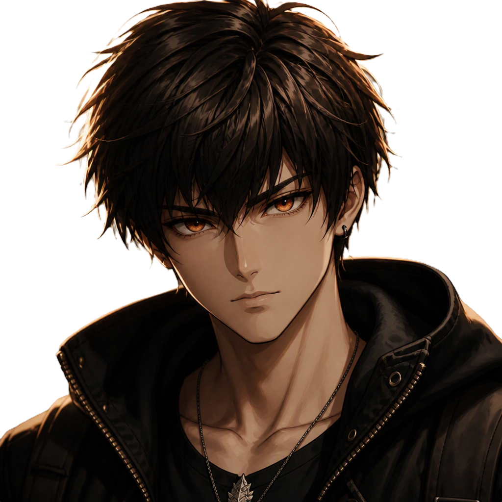
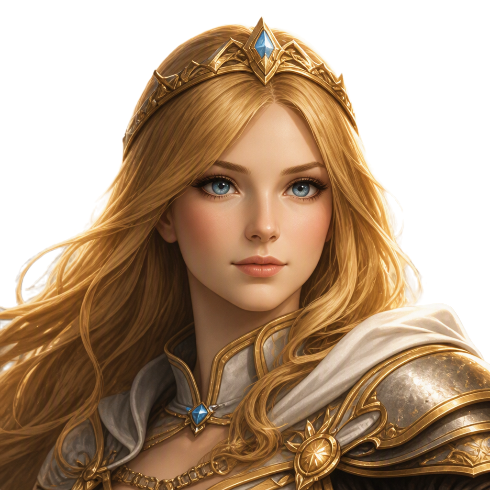
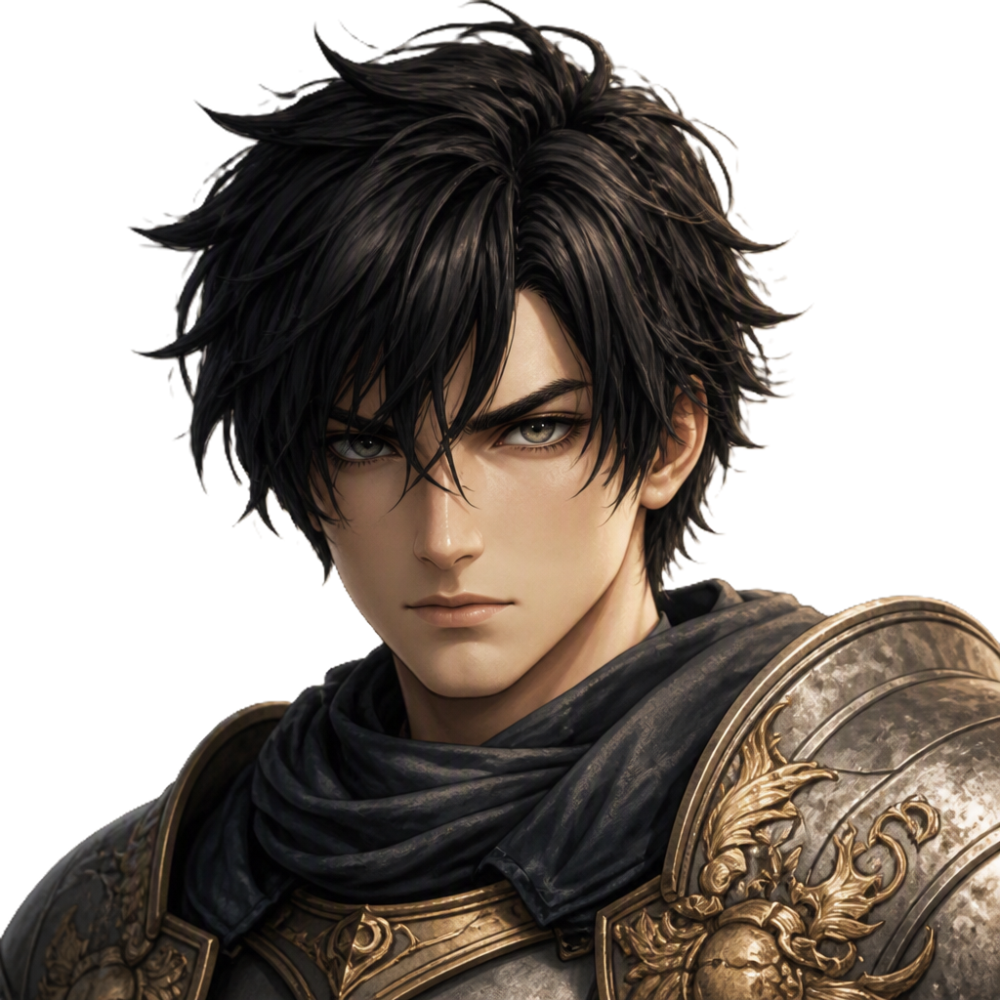
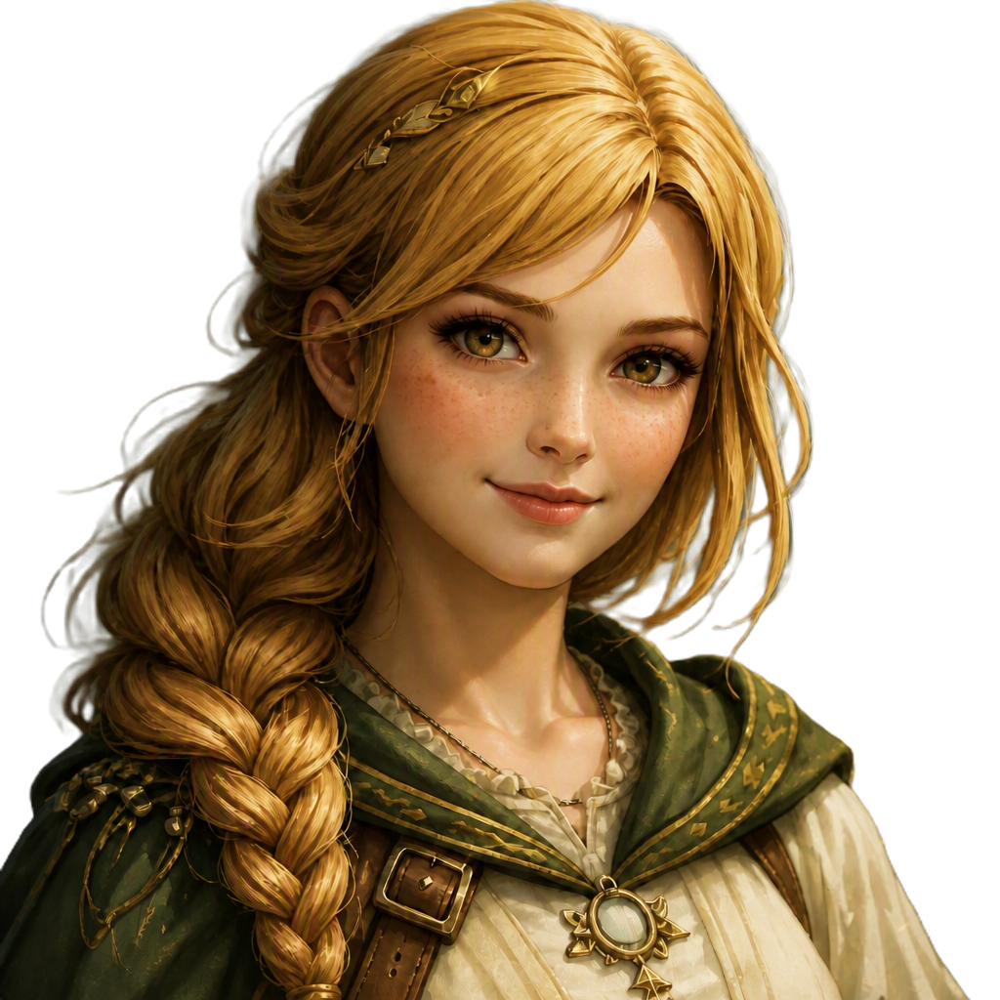
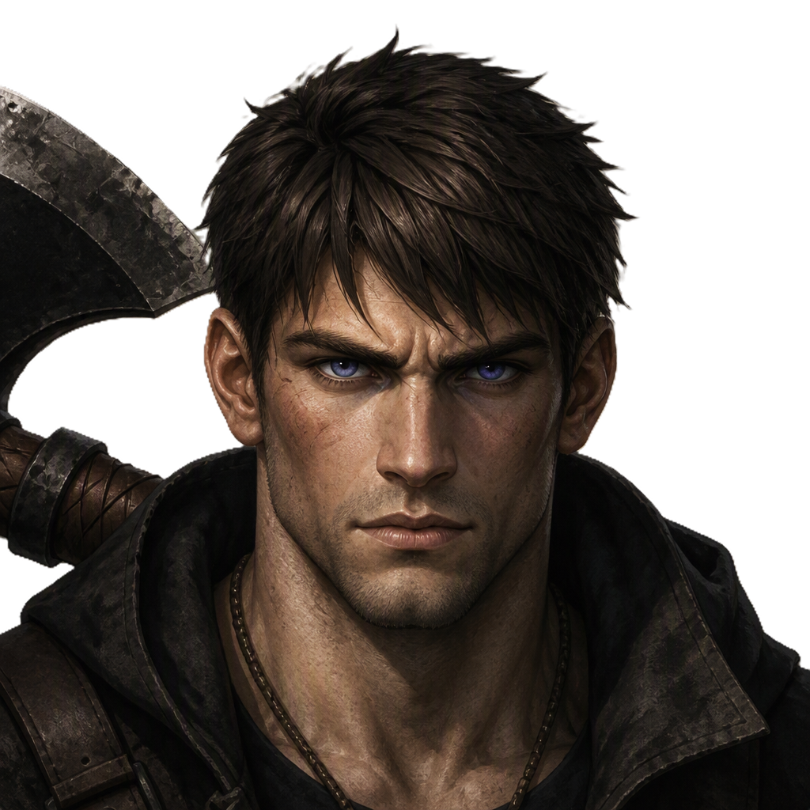
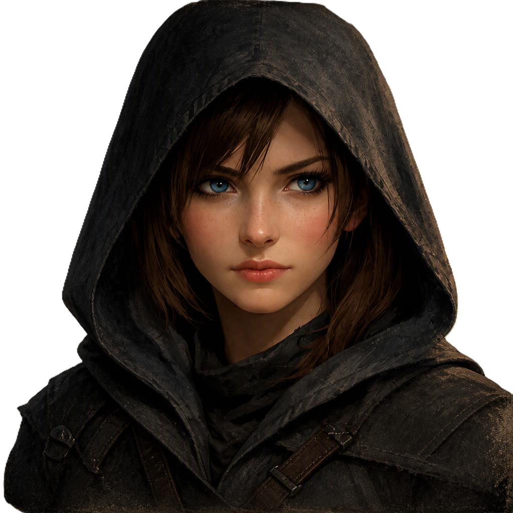
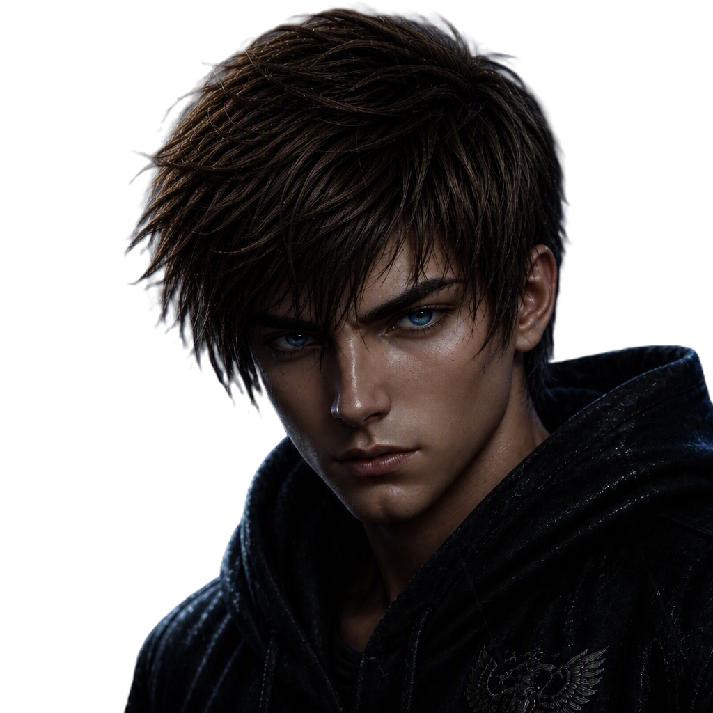

What players step into
Dreagon is a young man raised in a world torn apart by conflict, carrying the weight of a past he does not fully understand. As the Darkness spreads, he must confront truth, loyalty, and the cost of standing against it.
Elementallia is a JRPG inspired by classic Tales of adventures, following Dreagon as he journeys to defeat the Darkness. The world is filled with fractured loyalties, hidden truths, and a growing supernatural threat that tests every bond.
Elementallia is a fantasy world shaped by war, memory, and the threat of the Darkness. Dreagon’s journey is not just about strength — it is about uncovering what is real, what is lost, and what must be protected.
Dreagon is a young man raised in a world torn apart by conflict, carrying the weight of a past he does not fully understand. As the Darkness spreads, he must confront truth, loyalty, and the cost of standing against it.
Elementallia’s visual identity is rooted in fire, shadow, loyalty, and the tension between hope and corruption.

The face of the game: a story-driven fantasy world built around power, danger, and mythic resolve.

A look at the world’s atmosphere, combat tone, and the emotional sharpness behind Dreagon’s journey.
A realm split by conflict, memory, and the slow spread of the Darkness across forgotten lands.

Dreagon stands at the center of the story, carrying both personal loss and the burden of defeating the Darkness.
Each character carries a part of the story, from elemental power to personal loss, and every member of the party shapes Dreagon’s journey in a different way.
Protagonist
Dreagon Wingmen was born during a time of war, raised without ever knowing his father, and grew up in a small village with two friends he considered family. When the world he knew was shattered by an unexpected attack, he was forced to face the harsh truth that peace was not something he could take for granted. Determined to help anyone he can and to become the kind of man who can save the world, Dreagon carries both grief and hope as he walks the path ahead.
Element: Fire
Eye Color: Ember_Red

Co-Lead
Misty IronVeil is the eldest of three siblings, and her life was shattered when her village was attacked in her youth. She lost her family and home, and after the destruction, she was found by the king during a search for survivors. Raised alongside the princess, Misty grew into a strong-willed warrior and the leader of the elements, standing fiercely for freedom, truth, and the will to fight for what is right. Her resolve is unwavering, and she will protect others with the same strength that carried her through loss.
Element: Ice
Eye Color: Silver Blue

Party Member
Lummina Headwick is the princess of the royal family and wielder of the element of light. Admired for her strength and compassion, she leads with humility rather than authority. Lummina listens closely to the concerns of her people and stands firm in her belief that justice must be upheld, no matter the cost. In the chaos surrounding her kingdom, she remains a steady, radiant force who inspires hope in everyone she meets.
Element: Light
Eye Color: Silver Blue

Party Member
Ranger Knighthood is Dreagon’s best friend, and he was drafted by the knights to fight against Shepherd and his forces. Loyal to the core, he will stand by his friends no matter the cost, even if it means sacrificing his life. Though the world around him is full of darkness, he refuses to let it consume him and remains steadfast in his devotion to those he loves.
Element: None
Eye Color: Forest Green

Party Member
Emmy Tasker is one of Dreagon’s closest friends and a healer, though she is not as skilled as some of the others in her family. Even so, she gives her best effort every time and stands with her friends when they need her most. She is dependable, compassionate, and unwilling to leave anyone behind if she can help them.
Element: None
Eye Color: Silver Blue

Party Member
Terren Earthbound is a young man discovered by the royal family and raised under their protection. Though much of his past is shrouded in mystery, he has grown into someone who fights fiercely for those who cannot defend themselves. Loyal and grounded, Terren stands beside his friends without hesitation. His search for answers about his origins drives him forward, pushing him to uncover who he truly is and where he belongs.
Element: Earth
Eye Color: Silver Blue

Party Member
Rouge Shardwind is a quiet, observant girl who prefers to stay in the background, listening rather than speaking. Her sharp instincts and ability to gather information make her invaluable when secrets matter most. Though she rarely expresses her feelings openly, her loyalty runs deep — but once broken, it is nearly impossible to regain. In battle, Rouge stands with her friends without fear, proving that silence can be just as powerful as any weapon.
Element: Wind
Eye Color: Silver Blue

Party Member
Hennery Sparker is a prince from a distant kingdom, burdened by a painful past. His mother died during childbirth, and his father’s resentment left him with emotional scars he still struggles to heal. Despite this, Hennery remains kind‑hearted and deeply compassionate, striving to be a leader worthy of the people he cares about. Beneath his royal title, he longs for the simple truth of fighting beside his friends — not as a prince, but as someone who finally feels he belongs.
Element: Lightning
Eye Color: Silver Blue
Elementallia is the studio’s flagship project, built around a JRPG-inspired adventure where hope and despair clash in a world ruled by choice, power, and the fight against the Darkness.
Use the questions page to ask about development, lore, systems, or release progress. That gives you a direct player feedback route while the project grows.
Send A Question